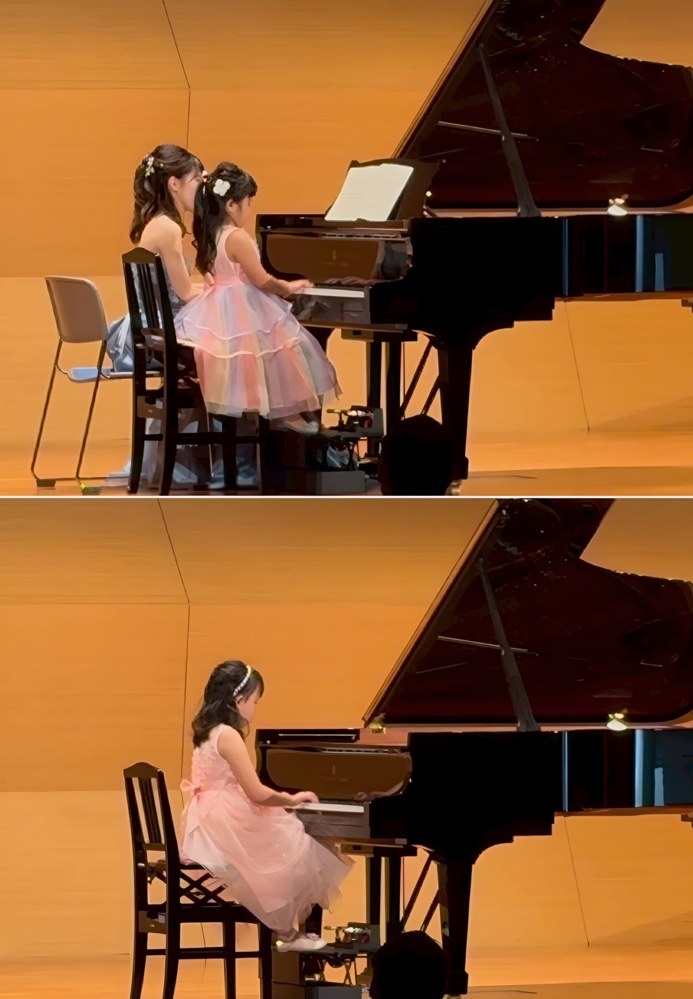
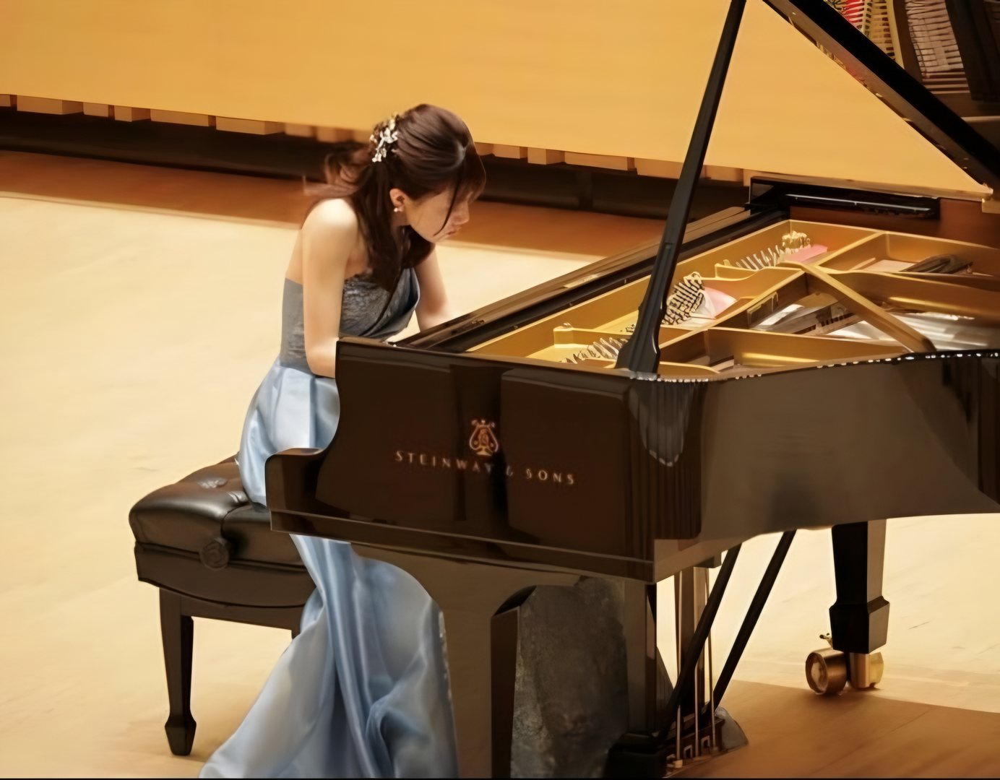

Piano Lesson高崎市片岡町
石原菜々子
ピアノ教室
高崎市片岡町｜
体験レッスン無料。
基礎〜／
01About
初心者の方も大歓迎！
楽しさと基礎を大切に
楽しさと
当教室は、
「弾ける楽しさ」を
ご年齢や

02Lesson
レッスン内容
お一人おひとりの
-
基礎〜上級まで
姿勢／
手の形／ 読譜力／ 表現力を 基礎から しっかりと 楽しく学びます。 -
趣味
（子ども・大人） 弾きたい曲を
楽しみながら、 ピアノの基礎知識も 取り入れたレッスン。 -
学校の伴奏
（合唱コンクールなど） 限られた期間で
曲を仕上げる 練習計画と 安定した 演奏づくりを サポートします。 -
音大受験・
コンクール・ 資格取得 音大受験、
コンクール、 保育士免許対策など 目的に合わせて より専門的に レッスン致します。 -
定期的な発表会
（任意） 日頃の成果を
披露する場として、 定期的に 発表会を開催しています。 参加は任意です。
03Price
料金
通常レッスン（30分／月4回）
- 子ども
- 6,500円
- 大人
- 7,000円
入会金不要
※ 教材費・発表会費別途
※ 上記以外の
まずはお気軽に、
04Features
当教室の特徴
上達の土台は
毎回のレッスンで
基礎を丁寧に
姿勢・
受験・コンクール
音楽大学受験・
定期的な発表会
日頃の練習の成果を
人前で
小さなお子さまも安心
集中力に合わせて、
大人の趣味にも
弾きたい曲を
出張・オンラインレッスンも相談可
料金・日程は

05Teacher
講師紹介
石原 菜々子
令和6年、
生徒さんとの
初めての方、
それぞれの
私自身も
06Contact
体験レッスン
お問い合わせ
体験レッスン（無料）の
ご経験や
【営業時間】
状況に応じて、
送信ありがとうございます
内容を確認のうえ、
数日たっても
お電話・メールでの
石原菜々子 ピアノ教室
高崎市片岡町2丁目
piano.kyoshitsu.75@gmail.com
050-1382-1090